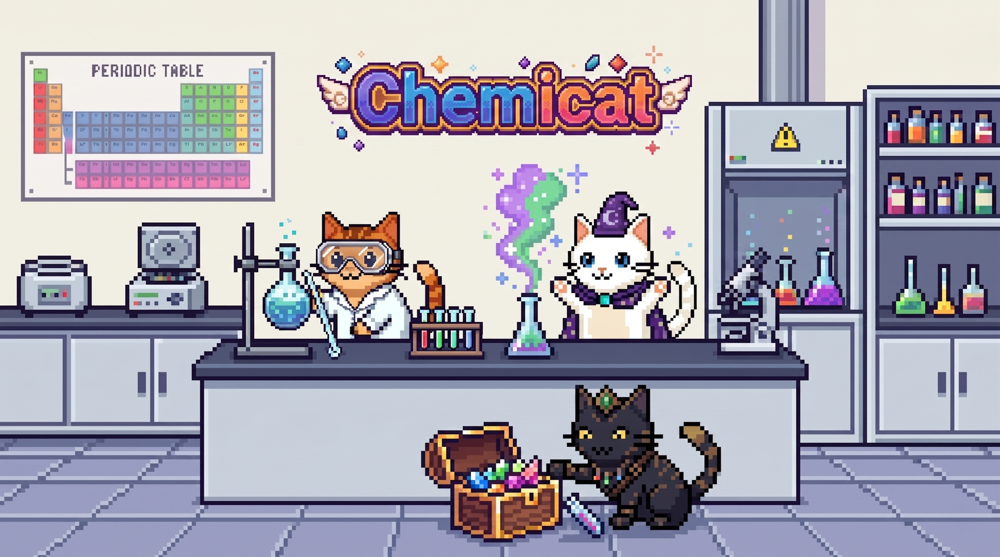
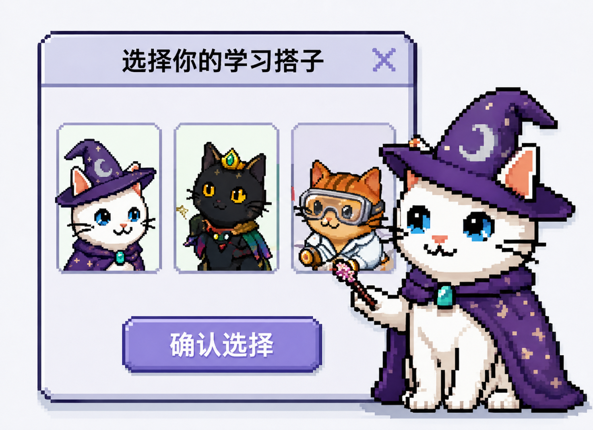
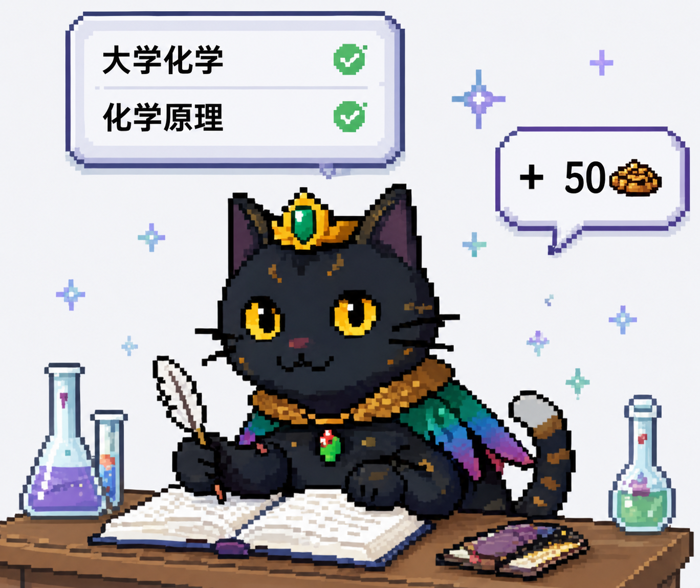
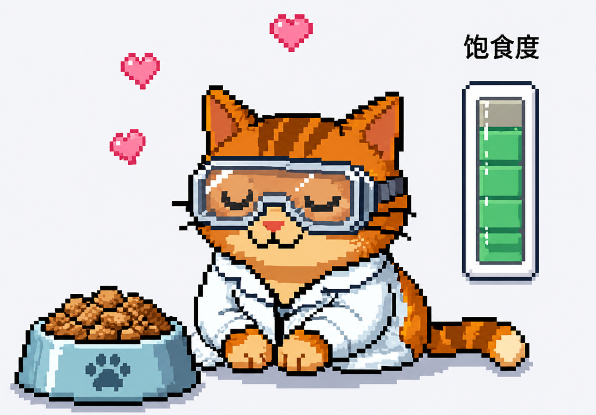
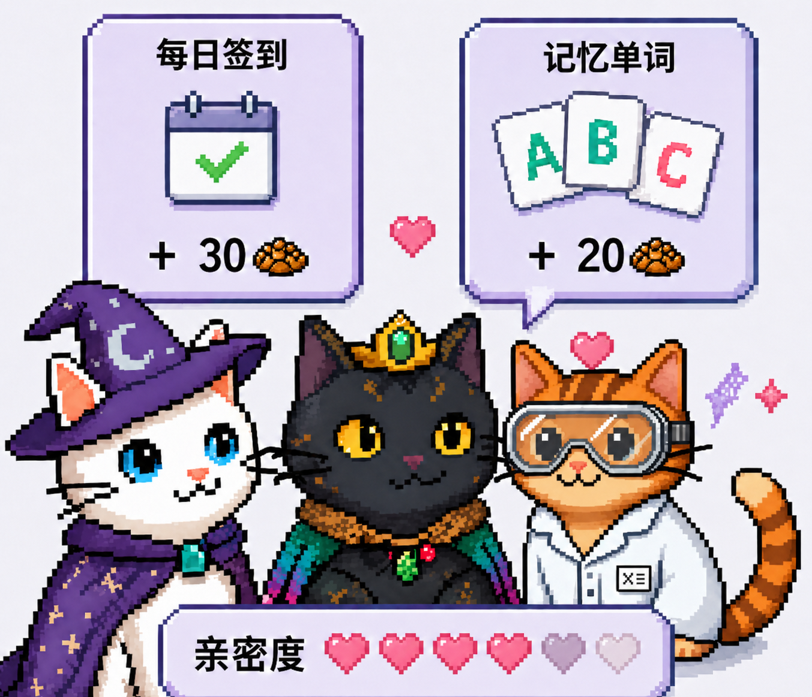

Chemicat
打开化学学习新方式
随时随记 · 靶向复习 · 赛博养猫，是你最懂化学的学习搭子。
立即体验
使用流程
选择你的学习搭子
新用户注册账号，选择一只小猫作为自己的学习搭子，开始你的化学学习之旅。


背记单词攒猫粮
选择方案大学化学 or 化学原理，背记单词攒猫粮积分，让学习产生真实奖励。
用猫粮喂食小猫
猫粮可以用来喂食小猫增加饱食度，让你的小猫越来越健康可爱！


提升亲密度
签到和记忆单词均可获得猫粮，保持高饱食度和定期撸猫可提高亲密度，解锁专属皮肤！